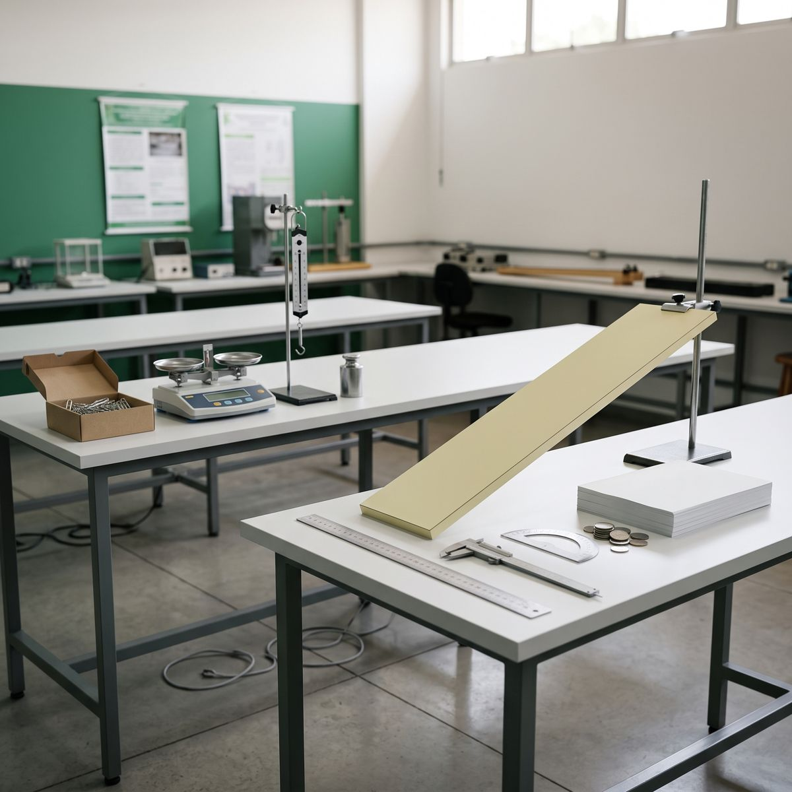

“O conhecimento é a navegação em um oceano de incertezas, através de arquipélagos de certezas.”
Em 1720, Vila Rica se levantou contra uma balança. A Coroa portuguesa mandara instalar em Minas as Casas de Fundição: todo o ouro em pó tirado dos ribeirões teria de ser levado até lá, ter a massa medida na balança, ser fundido em barras e marcado — e, nessa medição, a Coroa ficaria com o quinto, a quinta parte. Até então o ouro corria em pó, de mão em mão, com a massa medida em oitavas na balancinha de cada um. Os mineradores e comerciantes de Vila Rica pegaram em armas. A revolta durou poucas semanas; o governador, o Conde de Assumar, a sufocou, e Filipe dos Santos, um dos líderes, foi executado. A Casa de Fundição acabou funcionando alguns anos depois.
Na visita ao Museu de Ciência e Técnica da Escola de Minas, na Praça Tiradentes — o mesmo largo em que tudo isso aconteceu —, o professor Julio parou a turma diante da balança de ouro. Sofia leu a placa, olhou para o prato vazio e fez uma pergunta que ninguém esperava:
Pedro riu: "achava não é medir". Bárbara discordou: quem passou a vida peneirando cascalho sabia, com o pó na palma da mão, se ali havia meia oitava ou três. Lucas lembrou o que estava por trás da revolta: o minerador tinha um número na cabeça; a Coroa ia pôr outro número na balança; e quando os dois números não batiam, cada lado chamava o outro de ladrão.
O professor Julio deixou a discussão correr e depois escreveu na lousa, já no laboratório, as perguntas desta trilha:
A resposta a todas tem a mesma raiz, e ela dá nome a esta trilha: toda medida é um número e uma dúvida. O número sozinho é o que o minerador e a Coroa tinham — e por isso brigaram.
Como estudar. Antes do encontro, no Pré-Laboratório, dedique 30 minutos: ouça o Resumo em Áudio (MD), leia este Texto Temático (TT) tópico a tópico, faça a Folha de Atividades (FA) e o Testinho (TN). No Laboratório, 100 minutos: o Roteiro de Bancada (RB) traz seis tarefas, e em cada uma você estima antes de medir. No Pós-Laboratório, até 20 minutos para elaborar o Relatório Mínimo (RM), no prazo de 1 dia após o Laboratório, e até 30 minutos para fazer o Relatório Completo (RC), no prazo de 6 dias após a aula presencial no Laboratório. A T0B — Noções sobre Estimativas e Medidas — vale nota.
Cinco tópicos, na ordem em que a bancada os pede: primeiro a estimativa, feita com o cérebro e com os instrumentos que se levam no corpo; depois o que é uma medida e com que instrumento se faz; depois a leitura da escala, até o último traço; depois a diferença entre errar e duvidar; e, por fim, a forma de escrever o resultado com a sua dúvida.
Na Estação A do Roteiro de Bancada (RB), a primeira linha de cada tarefa não pede a medida com um instrumento: pede uma estimativa, feita com o cérebro e escrita a caneta. Quantas folhas do livro cabem em 1,0 mm? Quantos graus tem a rampa? A pergunta parece fora de lugar num laboratório. Não é: é por ela que toda medida começa.
Estimar é medir com o cérebro. A estimativa não é chute. É uma medida feita com os instrumentos que você leva consigo: o olho, que compara tamanhos; o palmo e o passo; a mão, que sente o peso; e a memória de uma medida conhecida. O RB dá a você, em cada tarefa, uma dessas memórias: 1 mm na régua, 10° no transferidor, 10,0 g de clipes na palma, 100 g de massa que pesam perto de 1,0 N. Estimar é comparar o tamanho da grandeza desconhecida com essa referência — exatamente o que o instrumento faz, só que com resolução menor que a dele.
Ordem de grandeza. Uma estimativa boa acerta, no mínimo, a ordem de grandeza: a potência de 10 mais próxima do valor. A espessura de uma folha é da ordem de 0,1 mm, não de 1 mm nem de 0,01 mm. Um clipe tem massa da ordem de 1 g, não de 10 g. Errar a ordem de grandeza é errar o modelo mental que se tem do tamanho da grandeza, e é isso que a bancada quer analisar.
Revisão rápida: a potência de 10. Uma potência de 10 tem dois termos: a base, que é sempre 10 e não muda, e o expoente, o número pequeno no alto, que conta quantas vezes o 10 entra como fator:
102 = 100 101 = 10 100 = 1 10−1 = 0,1 10−2 = 0,01
Subir 1 no expoente é multiplicar por 10; descer 1 é dividir por 10. O expoente é, portanto, a régua da ordem de grandeza: 0,1 mm, 1 mm e 10 mm estão em três ordens diferentes porque têm expoentes -1, 0 e 1. Uma regra a mais, que se usa logo adiante: multiplicar potências de 10 é somar os expoentes, 10a × 10b = 10a+b. E o expoente não precisa ser inteiro. Quanto vale 100,5? A mesma regra responde, passo a passo:
O que varia na análise: o expoente. O RB analisa cada estimativa pela razão
razão = medido / estimado,
com a estimativa e a medida escritas na mesma unidade. A unidade se cancela, e a razão é um número puro: diz quantas vezes o valor medido é maior (ou menor) que o estimado. Escreva essa razão como uma potência de 10, razão = 10x. A base 10 fica parada; o termo que varia é o expoente x. Estimativa perfeita dá razão = 1 = 100, isto é, x = 0. Quanto mais x se afasta de zero, para mais ou para menos, mais longe a estimativa ficou do valor medido. O critério da bancada é que x fique entre -0,5 e +0,5: meia ordem de grandeza para cada lado. Como 10−0,5 ≈ 0,3 e 10+0,5 ≈ 3, isso é o mesmo que a razão ficar entre 0,3 e 3. Na prática, nem é preciso calcular x: basta comparar a razão com 0,3 e 3.
Passo a passo.
Por que 0,3 e 3: a média geométrica. Qual número fica no meio do caminho entre 100 = 1 e 101 = 10? A média aritmética, (1 + 10)/2 = 5,5, acha o meio pela diferença: soma e subtrai. Mas a ordem de grandeza anda por fatores: multiplica e divide por 10. O meio por fatores é a média geométrica, a raiz quadrada do produto:
√(1 × 10) = √(10) ≈ 3,16 = 100,5.
Confira: de 1 a 3,16 multiplica-se por 3,16; de 3,16 a 10, multiplica-se outra vez por 3,16. São dois passos iguais, de meio expoente cada um. A média aritmética não passa nesse teste: de 1 a 5,5 o fator é 5,5, mas de 5,5 a 10 é só 1,8. Do outro lado do 1, a média geométrica entre 10−1 = 0,1 e 100 = 1 é √(0,1 × 1) ≈ 0,316 = 10−0,5, o inverso de 3,16. Arredondados, os dois limites viram 0,3 e 3. A faixa é simétrica nos fatores: errar 3 vezes para mais ou 3 vezes para menos é a mesma falha. É também a regra que dá a ordem de grandeza de qualquer número: escrito como N × 10n, com 1 ≤ N < 10, ele é da ordem de 10n se N < 3,16, e de 10n+1 se N ≥ 3,16. Errar por um fator 2 é estimar bem; errar por um fator 10 é não saber de que tamanho é a coisa.
| Tarefa | Estimado | Medido | Razão | x | Julgamento |
|---|---|---|---|---|---|
| A1 · folha | 0,033 mm | 0,083 mm | 2,5 | +0,40 | acertou |
| A3 · rampa | 20° | 15° | 0,75 | -0,12 | acertou |
| B1 · clipe | 3 g | 0,44 g | 0,15 | -0,82 | falhou |
| B2 · bloco | 2 N | 1,6 N | 0,80 | -0,10 | acertou |
A regra da caneta. A estimativa se escreve a caneta e não se apaga. Se ela pudesse ser corrigida depois da medida, deixaria de ser estimativa e viraria cópia. O RB diz: errar na estimativa não é erro de conduta; deixar de dizer por quê, é. No Quadro 1, o clipe falhou. A linha 5 do RB pede o porquê: quem estimou 3 g imaginou o clipe "do tamanho de uma moeda", e a moeda é que tem alguns gramas. É essa frase — e não a razão — o dado mais valioso da tarefa.
Estimativa de Fermi. Às vezes o tamanho da grandeza não se compara de uma vez com nada conhecido: ninguém traz na memória o tamanho da energia de uma explosão, nem o de um ano inteiro de trabalho na bateia. Então a grandeza se quebra em partes que se sabem estimar, cada parte é estimada com uma referência que se tem, e as partes se juntam numa conta. É uma estimativa indireta: não se compara o todo com uma referência; compara-se cada pedaço, e o todo sai da conta. Em 16 de julho de 1945, no primeiro teste de uma bomba atômica, no deserto do Novo México, nos Estados Unidos, o físico Enrico Fermi estava a uns 16 km da explosão. Quando a onda de choque — o empurrão de ar que a explosão espalha em todas as direções — passou por ele, Fermi soltou pedacinhos de papel da altura do ombro e viu quanto o ar os arrastou: uns 2,5 m. Ele não mediu a energia, que não cabia em nenhum instrumento à mão; mediu o deslocamento dos papéis, que cabia, e encadeou o resto em estimativas que sabia fazer. Chegou a uma energia equivalente a cerca de 10 mil toneladas de trinitrotolueno (TNT), o explosivo que serve de padrão para a energia de explosões. O valor calculado depois, com os instrumentos, ficou perto de 20 mil: razão ≈ 2, dentro da faixa de 0,3 a 3. A técnica leva o nome dele: dividir o problema até cada parte caber na mão. O Quadro 2 aplica a técnica a uma pergunta de Vila Rica: quantas bateias um minerador lavava num ano?
| Parte | Estimativa | Referência que cabe na mão |
|---|---|---|
| Bateias por hora | 6 | uma bateia leva uns 10 minutos para ser lavada |
| Horas por dia | 8 | um dia de trabalho, de sol a sol, com pausa |
| Dias por ano | 250 | tirados domingos, dias santos e chuvas fortes |
| Total | 12 000 | 6 × 8 × 250 = 1,2 × 104: como 1,2 < 3,16, ordem de grandeza 104 |
Nenhuma das três partes é exata, mas cada uma dificilmente erra por um fator 3; e os erros, para mais numa parte e para menos noutra, tendem a se compensar. Por isso a estimativa de Fermi costuma acertar a ordem de grandeza mesmo quando nenhuma parte é medida.
Aplicação — história. O minerador de Vila Rica fazia estimativa de ordem de grandeza todos os dias. Sabia, pela cor e pelo peso do pó na palma, se a bateia daquela manhã valia uma fração de oitava ou várias. A estimativa dele raramente era absurda; o que faltava era uma forma de dizer quanto ela podia estar errada. É o que esta trilha constrói.
Aplicação — metrologia. A estimativa prévia é uma prática de laboratório, não um passatempo: ela protege contra o erro grosseiro (Tópico 4). Quem estimou 0,1 mm e leu 1,0 mm desconfia na hora de ter contado a pilha errado; quem não estimou, copia o número.
Aplicação — prática docente. Peça à turma a estimativa antes de qualquer medida, por escrito e sem nota. A razão medido/estimado vira autoavaliação: o aluno vê, em números, o quanto o seu modelo da grandeza estava certo. E a pergunta "por que falhou?" ensina mais do que "qual é a resposta?", porque obriga a reconstruir o raciocínio.
Na tarefa A1, a régua tem divisão de 1 mm, e a folha tem uns 0,1 mm. Uma folha sozinha cabe dez vezes no menor traço da régua. Mesmo assim, ao fim da tarefa, você terá a espessura da folha. Para entender como, é preciso dizer com cuidado o que é medir.
Grandeza, mensurando, valor. O Vocabulário Internacional de Metrologia (VIM) chama de grandeza a propriedade de um corpo ou fenômeno que pode ser expressa por um número e uma referência (VIM 1.1): comprimento, massa, ângulo, força, tempo. A grandeza que se quer medir numa tarefa é o mensurando (VIM 2.3): a espessura de uma folha do livro, o tempo de reação de Lucas. O resultado é um valor (VIM 1.19), sempre na forma número × unidade: 0,083 mm. Sem a unidade, o número não diz nada; a próxima trilha (T0C) é inteira sobre elas.
Medir é comparar. Medir uma grandeza é compará-la com outra da mesma espécie, tomada como unidade, por meio de um instrumento. Cada instrumento compara uma grandeza, numa faixa: a régua de 30 cm não mede a altura do prédio da Escola de Minas, e a balança de cozinha não mede a massa de um caminhão de minério.
| Mensurando | Instrumento | Como se obtém |
|---|---|---|
| A1 · espessura da folha | régua milimetrada | indireta: pilha de 1,0 mm número de folhas |
| A2 · espessura e diâmetro da moeda | paquímetro digital | direta |
| A3 · inclinação da rampa | transferidor | direta |
| B1 · massa de um clipe | balança digital | indireta: massa do conjunto número de clipes |
| B2 · peso do bloco | dinamômetro | direta |
| B3 · tempo de reação | régua de 30 cm | indireta: mede-se a queda h; t = √(2h/g) |
Massa não é peso. No Quadro 3, o B1 mede uma massa e o B2 mede um peso, e a troca de nome não é capricho: na Mecânica Clássica, são grandezas distintas. A massa m mede a inércia do corpo, a resistência que ele opõe a mudar de velocidade; é grandeza de base, medida em quilograma (kg), e não muda se o corpo for levado à Lua. O peso P é uma força, um vetor: a atração gravitacional da Terra sobre o corpo, de módulo P = m g, medida em newton (N), com direção vertical e sentido para baixo. Na Lua, onde g é cerca de seis vezes menor, o mesmo corpo tem a mesma massa e um peso seis vezes menor. Na bancada, a balança indica massa, em gramas (a balança digital sente uma força, mas vem calibrada para mostrar massa); o dinamômetro indica peso, em newtons. Os 100 g de massa do Roteiro de Bancada (RB) pesam 0,100 kg × 9,8 m/s2 ≈ 0,98 N, perto de 1,0 N. Na fala do dia a dia, "pesar" e "peso" servem para as duas coisas; no laboratório, quem lê gramas mede massa, e quem lê newtons mede peso.
Direta e indireta. Na medida direta, o instrumento compara o próprio mensurando com a unidade: o paquímetro abraça a moeda e mostra o diâmetro. Na indireta, mede-se outra grandeza e o mensurando sai de uma conta. No B3, a régua não mede tempo nenhum: mede a distância h que ela caiu até ser segurada; o tempo vem da fórmula da queda livre, t = √(2h/g), com g = 9,8 m/s2. Uma régua que cai 18,0 cm dá t ≈ 0,19 s.
Medir muitas juntas e dividir. Quando o mensurando é menor do que a menor divisão do instrumento, mede-se um conjunto de cópias iguais e divide-se pelo número delas. Doze folhas preenchem 1,0 mm na régua: cada uma tem 1,0 / 12 ≈ 0,083 mm. A contagem (12) é exata; a dúvida inteira está no 1,0 mm. Dividir por 12 divide também essa dúvida por 12 — é por isso que o método funciona (Tópico 5). No B1, o mesmo gesto: a balança mede a massa de um punhado de clipes, e a de um clipe sai da divisão.
Aplicação — história. A oitava de Vila Rica era uma unidade de massa, e a balancinha de dois pratos era o instrumento que comparava o ouro com ela. A briga de 1720 não era sobre física; era sobre qual instrumento e de quem faria a comparação. A Escola de Minas, fundada em 1876, trouxe para Ouro Preto a exigência oposta: o instrumento aferido, que qualquer um pode conferir.
Aplicação — metrologia. A distinção entre direta e indireta é o primeiro passo da propagação de incertezas: a dúvida de uma grandeza medida passa, pela conta, para a grandeza calculada. A T0E faz essa propagação pela primeira vez, com o número π.
Aplicação — prática docente. O tempo de reação com a régua é uma das montagens mais baratas e mais ricas da escola: cabe em qualquer sala, envolve todos os alunos e faz aparecer, sem aviso, a medida indireta. Pergunte à turma "o que a régua mediu?" antes de mostrar a fórmula. A resposta errada mais comum — "o tempo" — é a porta para a conversa.
Toda tarefa do Roteiro de Bancada (RB) tem uma linha que parece burocrática: Menor divisão. Ela é a fronteira do que o instrumento sabe. Antes de ler um número, é preciso saber até onde aquele instrumento consegue ir.
Resolução. O Vocabulário Internacional de Metrologia (VIM) chama de resolução a menor variação da grandeza que causa uma variação perceptível na indicação (VIM 4.14). Na prática da bancada, ela se lê no próprio instrumento: é a menor divisão da escala, ou o último dígito do mostrador.
| Instrumento | Escala | Menor divisão | Cuidado na leitura |
|---|---|---|---|
| régua milimetrada | analógica | 1 mm | olho perpendicular; começar no zero, não na ponta gasta |
| paquímetro digital | digital | 0,01 mm | zerar com as garras fechadas antes de medir |
| transferidor | analógica | 1° | centro do transferidor no vértice do ângulo |
| balança digital | digital | 0,1 g ou 0,01 g | tarar antes de pôr os clipes |
| dinamômetro | analógica | a da mola (ver no corpo) | conferir o zero antes de pendurar o bloco |
Escala analógica. Na régua, no transferidor e no dinamômetro, a indicação é a posição de uma borda ou de um ponteiro entre traços. Quando ela cai entre dois traços, o último algarismo se estima: a borda da moeda entre 26 e 27 mm, "mais perto do 27, uns 26,8". Esse último algarismo é duvidoso — e é honesto escrevê-lo. A T0D dará nome a ele: o primeiro algarismo duvidoso, que ainda é significativo.
Paralaxe. Se o olho não está na perpendicular da escala, a borda parece cair num traço vizinho. É o mesmo cuidado que o B3 pede quando manda alinhar o zero da régua a uma linha imaginária perpendicular ao olho. A paralaxe é sempre do mesmo lado para o mesmo observador na mesma posição — guarde isso para o Tópico 4.
Mostrador digital. No paquímetro digital e na balança, não há traço para estimar: o último dígito do visor faz o papel de duvidoso. O visor não mostra a dúvida, mas ela está lá. Um paquímetro de 0,01 mm que mostra 26,98 mm não garante que a moeda tem 26,98 e não 26,99.
O zero. A leitura começa antes da medida. O dinamômetro que marca 0,1 N sem nada pendurado vai somar 0,1 N a todo peso; a balança sem tara soma o prato. Conferir o zero é parte da leitura, e não um passo opcional.
Aplicação — história. As balanças de ouro do século XVIII tinham massas-padrão — os "pesos" da fala do dia a dia — em frações de oitava, e a menor delas fixava a resolução da medição. Abaixo da menor massa-padrão, a balança não decidia; o fiel oscilava, e o resultado ficava por conta de quem olhava. A dúvida estava lá, sem nome.
Aplicação — metrologia. A resolução é um limite inferior da dúvida: nenhuma medida sabe mais do que a menor divisão do instrumento que a fez. Medir muitas juntas (Tópico 2) não melhora o instrumento; espalha a mesma dúvida por muitas cópias.
Aplicação — prática docente. Peça a três alunos que leiam a mesma borda na mesma régua, sem mostrar a leitura uns aos outros. Eles vão concordar nos milímetros e discordar no décimo. O ponto em que discordam é o algarismo duvidoso — e a discordância deixa de ser erro de alguém para virar propriedade da medida.
No B3, Lucas segurou a régua depois de 18,0 cm. Na segunda vez, 15,5 cm. Na terceira, 20,5 cm. Nenhuma das três leituras está errada, e nenhuma é "o" tempo de reação dele. Para falar disso sem confusão, a Metrologia separa duas palavras que a escola costuma usar como sinônimas.
Erro de medição (Vocabulário Internacional de Metrologia — VIM 2.16) é a diferença entre o valor medido e um valor de referência. Para calcular o erro, é preciso conhecer o valor de referência — e, na bancada, quase nunca se conhece. Ninguém sabe a espessura "verdadeira" da folha.
Incerteza de medição (VIM 2.26) é o parâmetro que caracteriza a dispersão dos valores que podem ser atribuídos ao mensurando. Em palavras simples: a dúvida que quem mediu declara sobre o próprio resultado. O erro quase nunca se conhece; a incerteza sempre se declara.
| Família | Como se reconhece | Na bancada |
|---|---|---|
| grosseiro | um valor absurdo, fora de qualquer padrão; vem de engano | contar 20 folhas onde havia 12; ler 15° no lado errado do transferidor |
| sistemático (VIM 2.17) | desloca todas as leituras para o mesmo lado; repetir não o revela | dinamômetro que não marca zero; paralaxe sempre do mesmo lado |
| aleatório (VIM 2.19) | varia de uma repetição para outra, ora para mais, ora para menos | as três quedas da régua de Lucas: 18,0, 15,5 e 20,5 cm |
O que cada família pede. O erro grosseiro se elimina: refaz-se a medida, e a estimativa prévia (Tópico 1) ajuda a flagrá-lo. O sistemático se corrige quando se descobre a causa — zerar o dinamômetro, mudar a posição do olho. O aleatório não se elimina; repete-se a medida e trata-se o conjunto. O VIM não usa a expressão "erro grosseiro": ela vem dos livros de laboratório, como o de Santoro, e designa o engano, não a natureza da medida.
Discrepância. Quando duas medidas da mesma grandeza dão valores diferentes, a diferença entre elas é a discrepância (TAYLOR, cap. 2). Ela só tem sentido ao lado das incertezas: 0,2 mm de discrepância é enorme numa folha e desprezível na largura da mesa. O Tópico 5 dá a regra.
A estimativa que falhou não é erro de medição. A razão fora da faixa do Tópico 1 não mede erro de instrumento nenhum: ela mostra que o modelo que você tinha da grandeza estava errado. Por isso a linha 5 do Roteiro de Bancada (RB) pergunta "por quê?" e não "quanto?".
Aplicação — história. Na disputa de 1720, o minerador e a Coroa falavam em erro — e em roubo. Sem incerteza declarada, qualquer diferença entre o número da cabeça e o da balança virava acusação. Com ela, a pergunta muda: a diferença é maior do que as dúvidas das duas medições? Se não for, ninguém roubou ninguém.
Aplicação — metrologia. A separação entre erro e incerteza é a mudança central do VIM em relação aos manuais antigos: o resultado de uma medição deixa de ser "o valor verdadeiro com um erro" e passa a ser "um valor com uma incerteza", que qualquer outro laboratório pode comparar com o seu.
Aplicação — prática docente. "Errei a medida" é a frase que mais se ouve num laboratório escolar, e quase sempre está errada. Ensine a turma a perguntar qual das três famílias apareceu. A maior parte do que o aluno chama de erro é aleatório e não é culpa de ninguém; tratar como culpa ensina a esconder dado.
Agora a dúvida já tem nome. Falta escrevê-la. O resultado de uma medida não é um número; é um número com a sua incerteza e a sua unidade, numa forma que qualquer pessoa leia do mesmo jeito.
A forma do resultado. Taylor escreve o resultado como
(valor medido) = xmelhor ± δx (unidade),
em que xmelhor é a melhor estimativa do mensurando e δx a incerteza. Quer dizer: o mensurando está, provavelmente, entre xmelhor - δx e xmelhor + δx. A moeda medida com a régua: d = (26,8 ± 0,5) mm.
A incerteza de leitura. Nesta trilha, a incerteza é a do instrumento, e a Introdução ao Laboratório (ILB) adota uma convenção — que é convenção, e não lei da natureza:
Quando a medida se repete e as leituras se espalham mais do que isso — como as quedas da régua de Lucas —, a dispersão é que manda, e o tratamento estatístico (média e desvio) entra nas trilhas seguintes.
Quantos algarismos. A incerteza se escreve com um algarismo significativo — dois, se o primeiro for 1 — e o valor termina na mesma casa decimal da incerteza (TAYLOR, cap. 2). Não se escreve (26,812 ± 0,5) mm: o 0,5 diz que o décimo já é duvidoso, e o 1 e o 2 depois dele são ruído.
Incerteza relativa. A razão δx / xmelhor é a incerteza relativa. Uma folha medida sozinha na régua teria (0,1 ± 0,5) mm: incerteza relativa de 500 %, medida inútil. A pilha de 1,0 mm tem 0,5 mm de incerteza, mas, dividida por 12 folhas, dá e = (0,08 ± 0,04) mm — 50 %, ainda grande, mas agora uma medida. Com 100 folhas, a incerteza relativa cairia para perto de 5 %. É a matemática do Tópico 2.
| Tarefa | Estimado | Medido ± incerteza | Razão · faixa |
|---|---|---|---|
| A1 · folha | 0,033 mm | (0,08 ± 0,04) mm | 2,5 · dentro |
| A2 · moeda, d | 2 cm | (26,98 ± 0,01) mm | 1,3 · dentro |
| A3 · rampa | 20° | (15,0 ± 0,5)° | 0,75 · dentro |
| B1 · clipe | 3 g | (0,436 ± 0,005) g | 0,15 · falhou |
| B2 · bloco | 2 N | (1,60 ± 0,05) N | 0,80 · dentro |
| B3 · reação | 0,14 s | (0,19 ± 0,01) s | 1,4 · dentro |
Dentro da incerteza. Duas medidas da mesma grandeza concordam quando os seus intervalos se sobrepõem — quando a discrepância (Tópico 4) não é maior que as incertezas. Se Pedro mede a moeda e obtém (26,98 ± 0,01) mm e Bárbara, com a régua, (26,8 ± 0,5) mm, os dois concordam: o intervalo de Bárbara contém o de Pedro. Essa regra vai julgar o equilíbrio de forças na Etapa 2.
O eixo metodológico nesta trilha. As três etapas que se repetem em toda trilha da ILB começam aqui, no tamanho certo para a T0B. A expressão da medida e da sua incerteza é este tópico inteiro. A tabela é o Quadro 6: uma linha por tarefa, com a unidade em cada célula, que o Relatório Mínimo (RM) e o Relatório Completo (RC) pedem. O ajuste de curva ainda não tem dado para trabalhar: ele chega na T0E, quando a circunferência e o diâmetro dos cilindros formarem um par e a primeira reta for ajustada. Uma pista, porém, já aparece: num eixo em escala de potências de 10, a faixa de 0,3 a 3 é simétrica em torno de 1 — o primeiro gráfico em que a escala conta.
Aplicação — história. Se a Casa de Fundição de Vila Rica tivesse escrito "3,0 oitavas, com a dúvida da balança", e o minerador "umas 3 oitavas, com a dúvida da mão", os dois intervalos se sobreporiam, e a diferença deixaria de ser acusação. A incerteza declarada é também um acordo entre pessoas.
Aplicação — metrologia. A forma "valor ± incerteza, com unidade" é o que permite comparar medidas de laboratórios diferentes, em países diferentes, com instrumentos diferentes. É a base da rastreabilidade, que a T0C apresenta com o Sistema Internacional de Unidades (SI).
Aplicação — prática docente. Na escola, a resposta certa costuma ser um número só. Experimente aceitar, numa atividade, apenas respostas com incerteza. Os alunos vão discutir quanto vale a dúvida — e essa discussão é a física da medida acontecendo na sala.
De volta a Vila Rica. A pergunta de Sofia — quanto o minerador achava que tinha, antes de pôr o ouro na balança? — agora tem resposta em cinco partes. Ele tinha uma estimativa, feita com a mão, que provavelmente acertava a ordem de grandeza (Tópico 1). A Coroa tinha uma medida, feita com um instrumento, de uma grandeza com unidade, a oitava (Tópico 2). A balança tinha uma resolução, a da menor massa-padrão, e abaixo dela não decidia (Tópico 3). A diferença entre os dois números podia ser engano, erro sistemático de uma balança viciada ou simples dispersão — erro não é o mesmo que incerteza (Tópico 4). E nenhum dos lados escreveu a sua dúvida: tinham só números, e números sozinhos não se comparam (Tópico 5).
É o que você vai fazer na bancada, seis vezes: o número da cabeça, a caneta; o número do instrumento, com a menor divisão; a razão entre eles; e, quando a razão sair da faixa, a frase que diz por quê. Toda medida é um número e uma dúvida — e a dúvida, declarada, é o que deixa duas pessoas concordarem.
Agora a Folha de Atividades e o Testinho. A Folha de Atividades (FA) pratica os cinco tópicos, do reconhecer ao criar. O Testinho (TN) fecha o Pré-Lab. No encontro de 20/10, o Roteiro de Bancada (RB) espera por você com a caneta na mão.
Em 1956, o escritor mineiro João Guimarães Rosa (1908–1967), nascido em Cordisburgo, publicou Grande Sertão: Veredas. Riobaldo, o narrador, atravessa o sertão de Minas, da Bahia e de Goiás, e tenta dizer o tamanho dele. Não tem trena nem mapa que sirva. Tem a frase:
"O sertão é do tamanho do mundo."
É uma estimativa. Riobaldo não mediu o sertão; comparou-o com a maior coisa que conhecia, e acertou a ordem de grandeza do que ele significava. Faz o mesmo que você na linha 1 de cada tarefa do Roteiro de Bancada (RB): pega uma referência que traz consigo e diz "é desse tamanho". A literatura não declara a incerteza — e é justamente por isso que a frase abre o pensamento em vez de fechá-lo. Na bancada, a dúvida se escreve; no romance, ela é o próprio assunto. Riobaldo passa o livro inteiro dizendo que não sabe, que desconfia, que "viver é muito perigoso".
Três cérebros, o mesmo gesto. Edgar Morin viu que conhecer é navegar num oceano de incertezas, de arquipélago em arquipélago; Lord Kelvin, que abre o seu Roteiro de Bancada, pediu que a medida se dissesse em números, para que se soubesse algo sobre ela; e Guimarães Rosa estimou o sertão do tamanho do mundo. Duvidar, medir, estimar — três criações do mesmo cérebro, como escreveu Miguel Nicolelis.
CAMPOS, A. A.; ALVES, E. S.; SPEZIALI, N. L. Física experimental básica na universidade. 2. ed. Belo Horizonte: Editora UFMG, 2008.
PIACENTINI, J. J. et al. Introdução ao laboratório de física. 2. ed. Florianópolis: Editora da UFSC, 2018.
SANTORO, A. et al. Estimativas e erros em experimentos de física. 2. ed. Rio de Janeiro: EdUERJ, 2013.
HEWITT, P. G. Física conceitual. 12. ed. Porto Alegre: Bookman, 2015.
FEYNMAN, R. P.; LEIGHTON, R. B.; SANDS, M. L. Feynman: lições de física. Porto Alegre: Bookman, 2008. v. 1, 2 e 3.
HALLIDAY, D.; RESNICK, R.; WALKER, J. Fundamentos de física: mecânica. 10. ed. Rio de Janeiro: LTC, 2016. v. 1.
TAYLOR, J. R. Introdução à análise de erros: o estudo de incertezas em medições físicas. 2. ed. Porto Alegre: Bookman, 2012.
INMETRO. Vocabulário Internacional de Metrologia (VIM): conceitos fundamentais e gerais e termos associados. Duque de Caxias: Inmetro, 2012.
MORIN, E. Os sete saberes necessários à educação do futuro. Tradução de Catarina Eleonora F. da Silva e Jeanne Sawaya. São Paulo: Cortez; Brasília: UNESCO, 2000.
THOMSON, W. (Lord Kelvin). Electrical units of measurement. In: Popular lectures and addresses. Londres: Macmillan, 1889. v. 1. Conferência de 1883. (abre o Roteiro de Bancada desta trilha)
ROSA, J. G. Grande sertão: veredas. Rio de Janeiro: José Olympio, 1956.